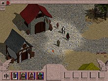
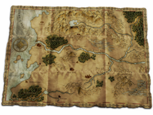
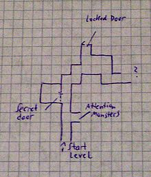
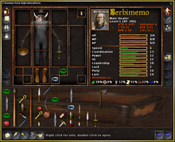
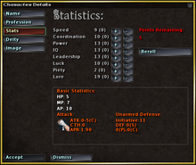
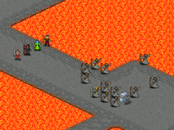

Characteristics of RPG video games.
Role-playing video games use much of the same terminology, settings and game mechanics as early tabletop role-playing games such as Dungeons & Dragons. Players control a central game character, or multiple game characters, usually called a party, and attain victory by completing a series of quests or reaching the conclusion of a central storyline. Players explore a game world, while solving puzzles and engaging in combat. A key feature of the genre is that characters grow in power and abilities, and characters are typically designed by the player. RPGs rarely challenge a player's physical coordination or reaction time, with the exception of action role-playing games.
Role-playing video games typically rely on a highly developed story and setting, which is divided into a number of quests. Players control one or several characters by issuing commands, which are performed by the character at an effectiveness determined by that character's numeric attributes. Often these attributes increase each time a character gains a level, and a character's level goes up each time the player accumulates a certain amount of experience.
Role-playing video games also typically attempt to offer more complex and dynamic character interaction than what is found in other video game genres. This usually involves additional focus on the artificial intelligence and scripted behavior of computer-controlled non-player characters.
Story and setting
The premise of many role-playing games tasks the player with saving the world, or whichever level of society is threatened. There are often twists and turns as the story progresses, such as the surprise appearance of estranged relatives, or enemies who become friends or vice versa. The game world tends to be set in a fantasy or science fiction universe, which allows players to do things they cannot do in real life and helps players suspend their disbelief about the rapid character growth. To a lesser extent, settings closer to the present day or near future are possible.
The story often provides much of the entertainment in the game. Because these games have strong storylines, they can often make effective use of recorded dialog and voiceover narration. Players of these games tend to appreciate long cutscenes more than players of faster action games. While most games advance the plot when the player defeats an enemy or completes a level, role-playing games often progress the plot based on other important decisions. For example, a player may make the decision to join a guild, thus triggering a progression in the storyline that is usually irreversible. New elements in the story may also be triggered by mere arrival in an area, rather than completing a specific challenge. The plot is usually divided so that each game location is an opportunity to reveal a new chapter in the story.
Pen-and-paper role-playing games typically involve a player called the gamemaster (or GM for short) who can dynamically create the story, setting, and rules, and react to a player's choices. In role-playing video games, the computer performs the function of the gamemaster. This offers the player a smaller set of possible actions, since computers can't engage in imaginative acting comparable to a skilled human gamemaster. In exchange, the typical role-playing video game may have storyline branches, user interfaces, and stylized cutscenes and gameplay to offer a more direct storytelling mechanism. Characterization of non-player characters in video games is often handled using a dialog tree. Saying the right things to the right non-player characters will elicit useful information for the player, and may even result in other rewards such as items or experience, as well as opening up possible storyline branches. Multiplayer online role-playing games can offer an exception to this contrast by allowing human interaction among multiple players and in some cases enabling a player to perform the role of a gamemaster.
Exploration and quests
Exploring the world is an important aspect of many RPGs. Players will walk through, talking to non-player characters, picking up objects, and avoiding traps. Some games such as NetHack, Diablo, and the FATE series randomize the structure of individual levels, increasing the game's variety and replayability. Role-playing games where players complete quests by exploring randomly generated dungeons and which include permadeath are called roguelikes, named after the 1980 video game Rouge
The game's story is often mapped onto exploration, where each chapter of the story is mapped onto a different location. RPGs usually allow players to return to previously visited locations. Usually, there is nothing left to do there, although some locations change throughout the story and offer the player new things to do in response. Players must acquire enough power to overcome a major challenge in order to progress to the next area, and this structure can be compared to the boss characters at the end of levels in action games.
The player typically must complete a linear sequence of certain quests in order to reach the end of the game's story, although quests in some games such as Arcanum or Geneforge can limit or enable certain choices later in the game. Many RPGs also often allow the player to seek out optional side-quests and character interactions. Quests of this sort can be found by talking to a non-player character, and there may be no penalty for abandoning or ignoring these quests other than a missed opportunity or reward. Quests may involve defeating one or many enemies, rescuing a non-player character, item fetch quests, or locational puzzles such as mysteriously locked doors.
Items and inventory
Players can find loot (such as clothing, weapons, and armor) throughout the game world and collect it. Players can trade items for currency and better equipment. Trade takes place while interacting with certain friendly non-player characters, such as shopkeepers, and often uses a specialized trading screen. Purchased items go into the player's inventory. Some games turn inventory management into a logistical challenge by limiting the size of the player's inventory, thus forcing the player to decide what they must carry at the time. This can be done by limiting the maximum weight that a player can carry, by employing a system of arranging items in a virtual space, or by simply limiting the number of items that can be held.
Character actions and abilities
Most of the actions in an RPG are performed indirectly, with the player selecting an action and the character performing it by their own accord. Success at that action depends on the character's numeric attributes. Role-playing video games often simulate dice-rolling mechanics from non-electronic role-playing games to determine success or failure. As a character's attributes improve, their chances of succeeding at a particular action will increase.
Many role-playing games allow players to play as an evil character. Although robbing and murdering indiscriminately may make it easier to get money, there are usually consequences in that other characters will become uncooperative or even hostile towards the player. Thus, these games allow players to make moral choices, but force players to live with the consequences of their actions. Games often let the player control an entire party of characters. However, if winning is contingent upon the survival of a single character, then that character effectively becomes the player's avatar. An example of this would be in Baldur's Gate, where if the character created by the player dies, the game ends and a previous save needs to be loaded.
Although some single-player role-playing games give the player an avatar that is largely predefined for the sake of telling a specific story, many role-playing games make use of a character creation screen. This allows players to choose their character's sex, their race or species, and their character class. Although many of these traits are cosmetic, there are functional aspects as well. Character classes will have different abilities and strengths. Common classes include fighters, spellcasters, thieves with stealth abilities, and clerics with healing abilities, or a mixed class, such as a fighter who can cast simple spells. Characters will also have a range of physical attributes such as dexterity and strength, which affect a player's performance in combat. Mental attributes such as intelligence may affect a player's ability to perform and learn spells, while social attributes such as charisma may limit the player's choices while conversing with non-player characters. These attribute systems often strongly resemble the Dungeons & Dragons ruleset.
Some role-playing games make use of magical powers, or equivalents such as psychic powers or advanced technology. These abilities are confined to specific characters such as mages, spellcasters, or magic-users. In games where the player controls multiple characters, these magic-users usually complement the physical strength of other classes. Magic can be used to attack, to defend, or to temporarily change an enemy or ally's attributes. While some games allow players to gradually consume a spell, as ammunition is consumed by a gun, most games offer players a finite amount of mana which can be spent on any spell. Mana is restored by resting or by consuming potions. Characters can also gain other non-magical skills, which stay with the character as long as he lives.
Experience and levels
Although the characterization of the game's avatar will develop through storytelling, characters may also become more functionally powerful by gaining new skills, weapons, and magic. This creates a positive-feedback cycle that is central to most role-playing games: The player grows in power, allowing them to overcome more difficult challenges, and gain even more power. This is part of the appeal of the genre, where players experience growing from an ordinary person into a superhero with amazing powers. Whereas other games give the player these powers immediately, the player in a role-playing game will choose their powers and skills as they gain experience.
Role-playing games usually measure progress by counting experience points and character levels. Experience is usually earned by defeating enemies in combat, with some games offering experience for completing certain quests or conversations. Experience becomes a form of score, and accumulating a certain amount of experience will cause the character's level to go up. This is called "levelling up", and gives the player an opportunity to raise one or more of his character's attributes. Many RPGs allow players to choose how to improve their character, by allocating a finite number of points into the attributes of their choice. Gaining experience will also unlock new magic spells for characters that use magic.
Some role-playing games also give the player specific skill points, which can be used to unlock a new skill or improve an existing one. This may sometimes be implemented as a skill tree. As with the technology trees seen in strategy video games, learning a particular skill in the tree will unlock more powerful skills deeper in the tree.
Three different systems of rewarding the player characters for solving the tasks in the game can be set apart: the experience system (also known as the "level-based" system), the training system (also known as the "skill-based" system) and the skill-point system (also known as "level-free" system)
- The experience system, by far the most common, was inherited from pen-and-paper role-playing games and emphasizes receiving "experience points" (often abbreviated "XP" or "EXP") by winning battles, performing class-specific activities, and completing quests. Once a certain amount of experience is gained, the character advances a level. In some games, level-up occurs automatically when the required amount of experience is reached; in others, the player can choose when and where to advance a level. Likewise, abilities and attributes may increase automatically or manually.
- The training system is similar to the way the Basic Role-Playing system works. The first video game to use this was Dungeon Master, which emphasized developing the character's skills by using them—meaning that if a character wields a sword for some time, he or she will become proficient with it.
- Finally, in the skill-point system (as used in Vampire: The Masquerade – Bloodlines for example) the character is rewarded with "skill points" for completing quests, which then can be directly used to "buy" skills and/or attributes, without having to wait until the next "level up".
Combat
Older games often separated combat into its own mode of gameplay, distinct from exploring the game world. More recent games tend to maintain a consistent perspective for exploration and combat. Some games, especially earlier video games, generate battles from random encounters; more modern RPGs are more likely to have persistent wandering monsters that move about the game world independently of the player. Most RPGs also use stationary boss monsters in key positions, and automatically trigger battles with them when the PCs enter these locations or perform certain actions. Combat options typically involve positioning characters, selecting which enemy to attack, and exercising special skills such as casting spells.
In a classical turn-based system, only one character may act at a time; all other characters remain still, with a few exceptions that may involve the use of special abilities. The order in which the characters act is usually dependent on their attributes, such as speed or agility. This system rewards strategic planning more than quickness. It also points to the fact that realism in games is a means to the end of immersion in the game world, not an end in itself. A turn-based system makes it possible, for example, to run within range of an opponent and kill him before he gets a chance to act, or duck out from behind hard cover, fire, and retreat back without an opponent being able to fire, which are of course both impossibilities. However, tactical possibilities have been created by this unreality that did not exist before; the player determines whether the loss of immersion in the reality of the game is worth the satisfaction gained from the development of the tactic and its successful execution. Fallout has been praised as being "the shining example of a good turn-based Combat System".
Real-time combat can import features from action games, creating a hybrid action RPG game genre. But other RPG battle systems such as the Final Fantasy battle systems have imported real-time choices without emphasizing coordination or reflexes. Other systems combine real-time combat with the ability to pause the game and issue orders to all characters under his/her control; when the game is unpaused, all characters follow the orders they were given. This "real-time with pause" system (RTwP) has been particularly popular in games designed by BioWare. The most famous RTwP engine is the Infinity Engine. Other names for "real-time with pause" include "active pause" and "semi real-time". Tactical RPG maker Apeiron named their system Smart Pause Mode (SPM) because it would automatically pause based on a number of user-configurable settings. Fallout Tactics: Brotherhood of Steel and Arcanum: Of Steamworks and Magick Obscura offered players the option to play in either turn-based or RTwP mode via a configuration setting. The latter also offered a "fast turn-based" mode, though all three of the game's modes were criticized for being poorly balanced and oversimplified.
Early Ultima games featured timed turns: they were strictly turn-based, but if the player waited more than a second or so to issue a command, the game would automatically issue a pass command, allowing the monsters to take a turn while the PCs did nothing.
There is a further subdivision by the structure of the battle system; in many early games, such as Wizardry, monsters and the party are arrayed into ranks, and can only attack enemies in the front rank with melee weapons. Other games, such as most of the Ultima series, employed duplicates of the miniatures combat system traditionally used in the early role-playing games. Representations of the player characters and monsters would move around an arena modeled after the surrounding terrain, attacking any enemies that are sufficiently near.
Interface and graphics
Players typically navigate the game world from a first or third-person perspective in 3D RPGs. However, an isometric or aerial top-down perspective is common in party-based RPGs, in order to give the player a clear view of their entire party and their surroundings. Role-playing games require the player to manage a large amount of information, and frequently make use of a windowed interface. For example, spell-casting characters will often have a menu of spells they can use. On the PC, players typically use the mouse to click on icons and menu options, while console games have the player navigate through menus using a game controller. Older games often revealed calculations of the game as seen in Dungeons & Dragons games, although more recent games have removed this information to improve immersion.